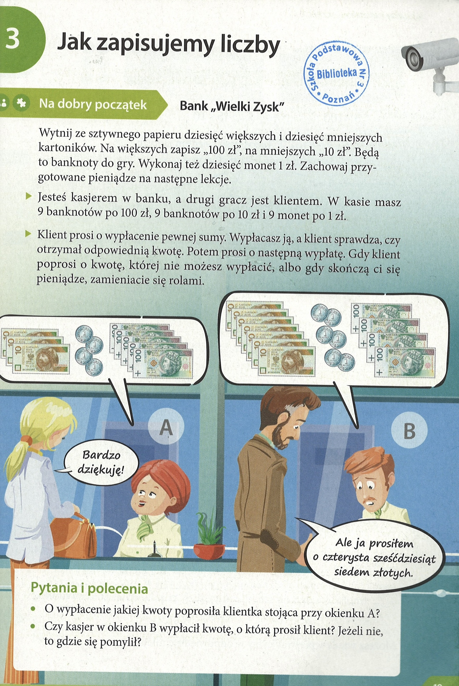
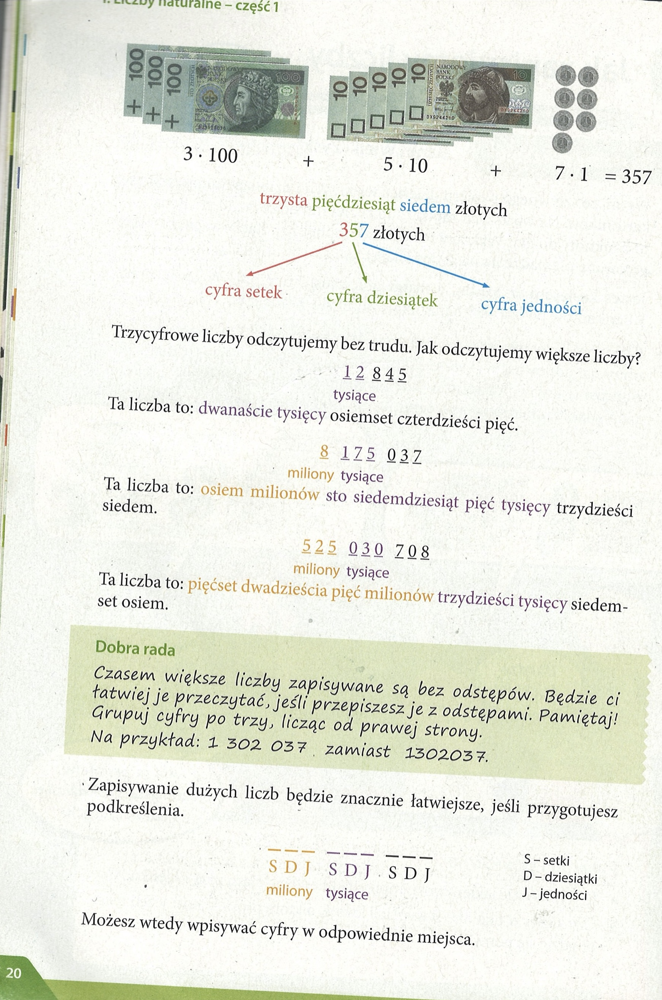
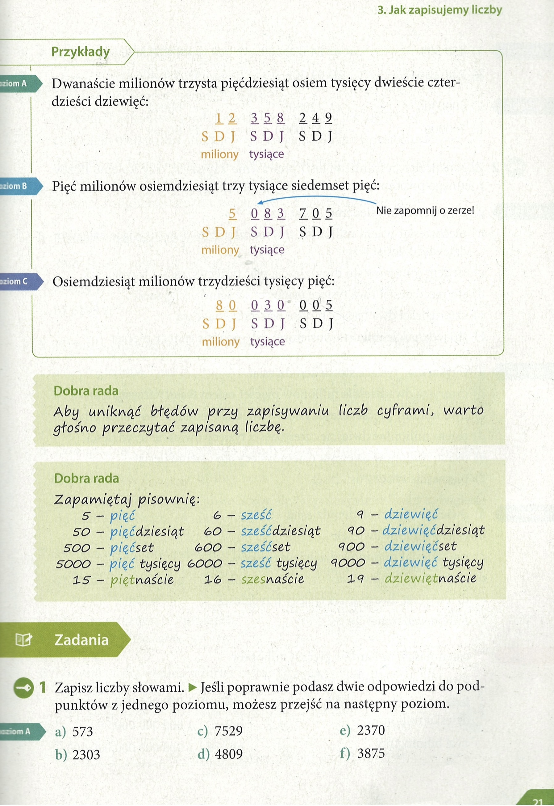
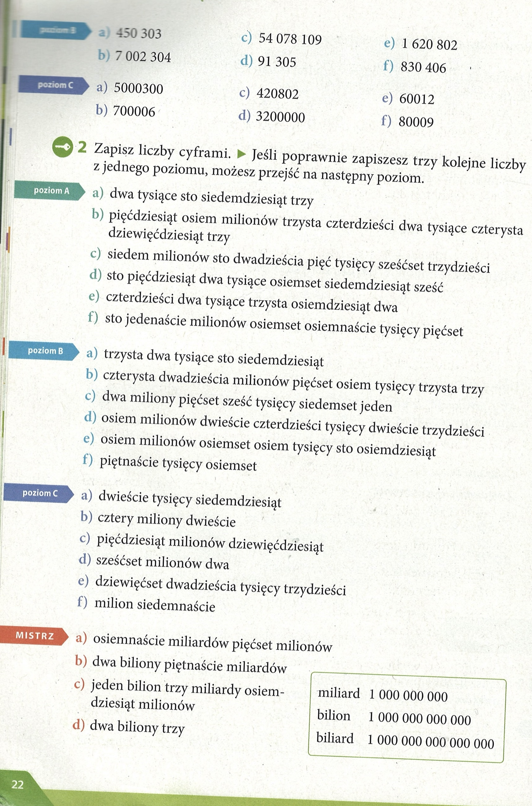
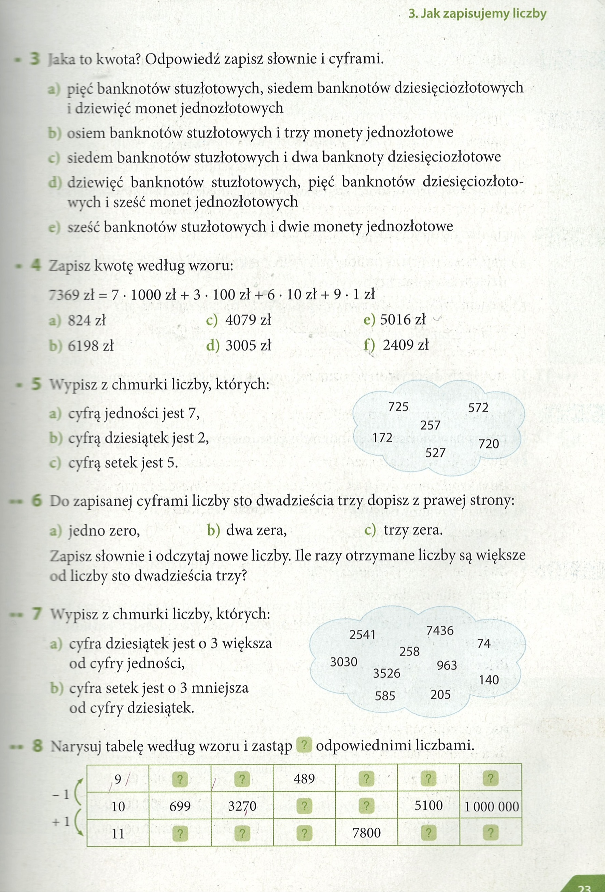
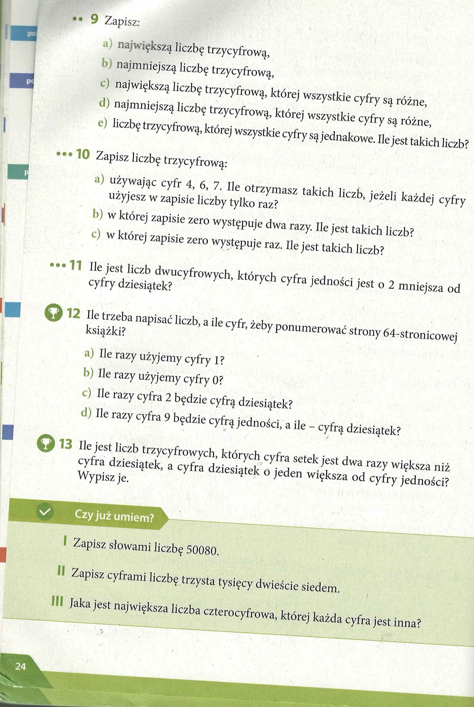

Matematyka
Liczby naturalne - czesc 1
Lekcja 03. Jak zapisujemy liczby 19 -
👉 1. Cyfry i liczby
-
Cyfry – to znaki, którymi zapisujemy liczby.
W matematyce mamy 10 cyfr:0, 1, 2, 3, 4, 5, 6, 7, 8, 9
-
Liczby – powstają z cyfr.
Np.:
- 4 to liczba jednocyfrowa,
- 23 to liczba dwucyfrowa (składa się z cyfr 2 i 3),
- 158 to liczba trzycyfrowa.
👉 2. Miejsce cyfry w liczbie (wartość pozycyjna)
Każda cyfra ma swoją wartość zależną od miejsca, na którym stoi:
- pierwsze miejsce od prawej → jedności,
- drugie miejsce → dziesiątki,
- trzecie miejsce → setki,
- czwarte miejsce → tysiące, itd.
Przykład:
Liczba 4 327
- 7 → jedności,
- 2 → dziesiątki,
- 3 → setki,
- 4 → tysiące.
Czyli 4 327 = 4000 + 300 + 20 + 7
👉 3. Jak czytamy i zapisujemy duże liczby
- 1 234 = jeden tysiąc dwieście trzydzieści cztery
- 50 807 = pięćdziesiąt tysięcy osiemset siedem
- 300 009 = trzysta tysięcy dziewięć
👉 4. Zero w zapisie liczby
- Zero może być w środku lub na końcu liczby, ale zmienia wartość!
- 305 = trzyset pięć (zero oznacza, że nie ma dziesiątek),
- 5 020 = pięć tysięcy dwadzieścia (zero oznacza, że nie ma setek).
Jak zapisujemy tysiące i miliony słowami?
👉1. Liczba „tysiąc”
-
1 000 = tysiąc (piszemy bez „jeden” przed nim).
✅ 1 000 → tysiąc
❌ nie mówimy „jeden tysiąc”.
-
kilka tysięcy:e
- 1 - tysiąc
- 2,3,4 - tysiące
- 5,6,7... - tysięcy
👉 2. Liczba „milion”
-
1 000 000 = milion (też bez „jeden” przed nim).
✅ 1 000 000 → milion
❌ nie mówimy „jeden milion”.
-
kilka milionów:
- 1 - milion
- 2,3,4 - miliony
- 5,6,7 ... - milionów
strona 19


strona 21
Zadanie 1, str 21, poz.A
Zapisz liczby słowami. • Jeśli poprawnie podasz dwie odpowiedzi do podpunktów z jednego poziomu, możesz przejść na następny poziom.
a) 573
b) 2303
c) 7529
d) 4809
e) 2370
f) 3875
a) Pięćset siedemdziesiąt trzy.
b) Dwa tysiące trzysta trzy.
c) Siedem tysięcy pięćset dwadzieścia dziewięć.
d) Cztery tysiące osiemset dziewięć.
e) Dwa tysiące trzysta siedemdziesiąt.
f) Trzy tysiące osiemset siedemdziesiąt pięć.

strona 22

Zadanie 1, str.22, poz. B
450 303
7 002 304
54 078 109
91 305
1 620 802
830 406
a) Czterysta pięćdziesiąt tysięcy trzysta trzy.
b) Siedem milionów dwa tysiące trzysta cztery.
c) Pięćdziesiąt cztery miliony siedemdziesiąt osiem tysięcy sto dziewięć.
d) Dziewięćdziesiąt jeden tysięcy trzysta pięć.
e) Milion sześćset dwadzieścia tysięcy osiemset dwa.
f) Osiemset trzydzieści tysięcy czterysta sześć.
Zadanie 1, str.22, poz. C
5000300
700006
420802
3200000
60012
80009
a) Pięć milionów trzysta.
b) Siedemset tysięcy sześć.
c) Czterysta dwadzieścia tysięcy osiemset dwa.
d) Trzy miliony dwieście tysięcy.
e) Sześćdziesiąt tysięcy dwanaście.
f) Osiemdziesiąt tysięcy dziewięć.
Zadanie 2, str. 22, poz.A
Zapisz liczby cyframi.
a) dwa tysiące sto siedemdziesiąt trzy
b) pięćdziesiąt osiem milionów trzysta czterdzieści dwa tysiące czterysta dziewięcdziesiąt trzy
c) siedem milionów sto dwadzieścia piçć tysięcy sześćset trzydzieści
d) sto pięćdziesiąt dwa tysiące osiemset siedemdziesiąt sześć
e) czterdzieści dwa tysiące trzysta osiemdziesiąt dwa
f) sto jedenaście milionów osiemset osiemnaście tysięcy pięćset
a) 2 173
b) 58 342 493
c) 7 125 630
d) 152 876
e) 42 382
f) 111 818 500
Zadanie 2, str. 22, poz.B
Zapisz liczby cyframi.
a) trzysta dwa tysiące sto siedemdziesiąt
b) czterysta dwadzieścia milionów pięćset osiem tysięcy trzysta trzy
c) dwa miliony pięćset sześć tysięcy siedemset jeden
d) osiem milionów dwieście czterdzieści tysięcy dwieście trzydzieści
e) osiem milionów osiemset osiem tysięcy sto osiemdziesiąt
f ) piętnaście tysięcy osiemset
a) 302 170
b) 420 508 303
c) 2 506 701
d) 8 240 230
e) 8 808 180
f) 15 800
Zadanie 2, str. 22, poz.C
Zapisz liczby cyframi.
a) dwieście tysięcy siedemdziesiąt
b) cztery miliony dwieście
c) pięćdziesiąt milionów dziewięćdziesiąt
d) sześćset milionów dwa
e) dziewięćset dwadzieścia tysięcy trzydzieści
f) milion siedemnaście
a) 200 070
b) 4 000 200
c) 50 000 090
d) 6 000 002
e) 920 030
f) 1 000 017
Zadanie 2, str. 22, Mistrz
Zapisz liczby cyframi.
a) osiemnascie miliardów piecset milionów
b) dwa biliony pietnascie miliardów
c) jeden bilion trzy miliardy osiemdziesiat milionów
d) dwa biliony trzy
a) 18 500 000 000
b) 2 015 000 000 000
c) 1 003 080 000 000
d) 2 000 000 000 003
strona 23
Zadanie 3 - strona 23
Jaka to kwota? Odpowiedi zapisz stownie i cyframi.
a) pięć banknotów stuzłotowych, siedem banknotów dziesięciozłotowych i dziewieć monet jednozłotowych
b) osiem banknotów stuzłotowych i trzy monety jednozłotowe
c) siedem banknotów stuzłotowych i dwa banknoty dziesięciozłotowe
d) dziewięć banknotów stuzłotowych, pięć banknotów dziesięciozłotowych i sześć monet jednozłotowych
e) sześć banknotów stuzłotowych i dwie monety jednozłotowe
a) 500 + 70 + 9 = 579 zł - Pięćset siedemdziesiąt dziewięć złotych
b) 800 + 3 = 803 zł - Osiemset trzy złote.
c) 700 + 20 = 720 zł - Siedemset dwadzieścia złotych.
d) 900 + 50 + 6 = 956 zł - Dziewięćset pięćdziesiąt sześć złotych
e) 600 + 2 = 602 zł - Sześćset dwa złote
Zadanie 4 - strona 23
Zapisz kwote wedtug wzoru:
7369 zł = 7 • 1000 zł + 3 - 100 zł + 6 • 10 zł + 9 - 1 zł
a) 824 zł
b) 6198 zł
c) 4079 zł
d) 3005 zł
e) 5016 zł
e) 2409 zł
a) 824 zł = 8 · 100 zł + 2 · 10 zł + 4 · 1 zł
b) 6198 zł = 6 · 1000 zł + 1 · 100 zł + 9 · 10 zł + 8 · 1 zł
c) 4079 zł = 4 · 1000 zł + 0 · 100 zł + 7 · 10 zł + 9 · 1 zł
d) 3005 zł = 3 · 1000 zł + 0 · 100 zł + 0 · 10 zł + 5 · 1 zł
e) 5016 zł = 5 · 1000 zł + 0 · 100 zł + 1 · 10 zł + 6 · 1 zł
e) 2409 zł = 2 · 1000 zł + 4 · 100 zł + 0 · 10 zł + 9 · 1 zł
Zadanie 5 - strona 23
Wypisz z chmurki liczby, których:
a) cyfra jednosci jest 7,
b) cyfra dziesiatek jest 2,
c) cyfra setek jest 5.
a) 257, 527
b) 725, 527, 720
c) 527, 572
Zadanie 6 - strona 23
Do zapisanej cyframi liczby sto dwadziescia trzy dopisz z prawej strony:
a) jedno zero,
b) dwa zera,
c) trzy zera.
Zapisz słownie i odczytaj nowe liczby. Ile razy otrzymane liczby są większe od liczby sto dwadzieścia trzy?
a) 1230 - Tysiąc dwieście trzydzieści - 1230 jest 10 razy większe od 123
b) 12 300 - Dwanaście tysięcy trzysta - 12 300 jest 100 razy większe od 123.
c) 123 000 - Sto dwadzieścia trzy tysiące - 123 000 jest 1000 razy większe od 123

Zadanie 7 - strona 23
Wypisz z chmurki liczby, których:
a) cyfra dziesiątek jest o 3 większa od cyfry jedności,
b) cyfra setek jest o 3 mniejsza od cyfry dziesiątek.
a) 74, 585, 963, 2541, 3030
b) 140, 258, 585, 3030
Zadanie 8 - strona 23
Narysuj tabelę według wzoru i zastąp ? odpowiednimi liczbami.
| 9 | 698 | 3269 | 489 | 7798 | 5099 | 999 999 |
| 10 | 699 | 3270 | 490 | 7799 | 5100 | 1 000 000 |
| 11 | 700 | 3271 | 491 | 7800 | 5101 | 1 000 001 |
strona 24

Zadanie 9 - strona 24
Zapisz
a) najwieksza liczbe trzycyfrowa,
b) najmniejsza liczbe trzycyfrowa,
c) najwieksza liczbe trzycyfrowa, której wszystkie cyfry sa rózne,
d) najmniejsza liczbe trzycyfrowa, której wszystkie cyfry sa rózne,
e) liczbe trzycyfrowa, której wszystkie cyfry sa jednakowe. Ile jest takich liczb?
a) 999
b) 100
c) 987
d) 102
e) 111, 222, 333, 444, 555, 666, 777, 888, 999 (jest 9 takich liczb)
Zadanie 10 - strona 24
Zapisz liczbę trzycyfrową:
a) używając cyfr 4, 6, 7. Ile otrzymasz takich liczb, jeżeli każdej cyfry użyjesz w zapisie liczby tylko raz?
b) w której zapisie zero występuje dwa razy. Ile jest takich liczb?
c) w której zapisie zero występuje raz. Ile jest takich liczb?
a) 467, 476, 647, 674, 746, 764 (jest ich 6)
b) 100, 200, 300, 400, 500, 600, 700, 800, 900 (jest ich 9)
c) Łącznie są 162 takie liczby.
1. Условие
- Число должно быть трёхзначным → от 100 до 999.
- В записи числа должно быть ровно одно "0".
- Остальные цифры ≠ 0.
2. Рассмотрим случаи расположения нуля
У трёхзначного числа есть три позиции:
__ _ _ - (сотни, десятки, единицы).
Случай A: ноль стоит в середине (сотни – десятки – единицы: 0)
Пример: 203.
- Первая цифра (сотни): 1–9 (9 вариантов).
- Вторая цифра: 0 (фиксировано).
- Третья цифра (единицы): 1–9 (9 вариантов).
Итого: 9×1×9=81
Случай B: ноль стоит в конце (сотни – десятки – 0)
Пример: 450.
- Первая цифра (сотни): 1–9 (9 вариантов).
- Вторая цифра (десятки): 1–9 (9 вариантов).
- Третья цифра: 0 (фиксировано).
Итого: 9×9×1=81
Случай C: ноль стоит в начале (0 в сотнях)
Невозможно, потому что число не может начинаться с нуля (оно было бы двузначным).
3. Суммируем
Всего таких чисел: 81+81=162
✅
Ответ
: существует162 трёхзначных числа с ровно одним нулём
.Zadanie 11 - strona 24
Ile jest liczb dwucyfrowych, których cyfra jedności jest o 2 mniejsza od cyfry dziesiątek?
(Нужно найти двузначные числа, в которых цифра единиц на 2 меньше, чем цифра десятков.)
Wypiszmy wszystkie możliwości: 20, 31, 42, 53, 64, 75, 86, 97. Jest osiem takich liczb.
Шаг 1. Вспоминаем, что такое двузначное число
Двузначное число состоит из цифры десятков и цифры единиц.
Например, в числе 53:
Шаг 2. Условие задачи
Цифра единиц должна быть на 2 меньше, чем цифра десятков.
Например:
- Если десятки = 2, то единицы = 0 → число 20.
- Если десятки = 3, то единицы = 1 → число 31.
- Если десятки = 4, то единицы = 2 → число 42.
И так далее…
Шаг 3. Перечислим все числа
20, 31, 42, 53, 64, 75, 86, 97
Zadanie 12 - strona 24
Ile trzeba napisać liczb, a ile cyfr, żeby ponumerować strony 64-stronicowej książki?
- a) Ile razy uzyjemy cyfry 1?
- b) Ile razy uzyjemy cyfry 0?
- c) Ile razy cyfra 2 bedzie cyfra dziesiatek?
- d) Ile razy cyfra 9 bedzie cyfra jednosci, a ile - cyfra dziesiatek?
Условие
У нас есть книга на 64 страницы.
Мы пишем номера страниц: 1, 2, 3, …, 64.
Нужно посчитать:
- Сколько всего чисел мы напишем и сколько цифр.
-
А потом отдельно:
- сколько раз встречается цифра 1,
- сколько раз встречается цифра 0,
- сколько раз цифра 2 стоит на месте десятков,
- сколько раз цифра 9 стоит в единицах, а сколько — в десятках.
сколько раз цифра 9 стоит в единицах, а сколько — в десятках.
- Числа: от 1 до 64 → 64 числа.
-
Теперь считаем цифры:
- от 1 до 9 — 9 чисел по 1 цифре → 9 цифр,
- от 10 до 64 — 55 чисел по 2 цифры → 55×2=110 цифр,
- всего 9 + 110 = 119 цифр
👉 Ответ: 64 числа и 119 цифр.
b) 17
c) 6
d) 10
Zadanie 13 - strona 24
Ile jest liczb trzycyfrowych, których cyfra setek jest dwa razy większa niż cyfra dziesiątek, a cyfra dziesiątek o jeden większa od cyfry jedności? Wypisz je.
210, 421, 632, 843. Łącznie są 4 takie liczby.